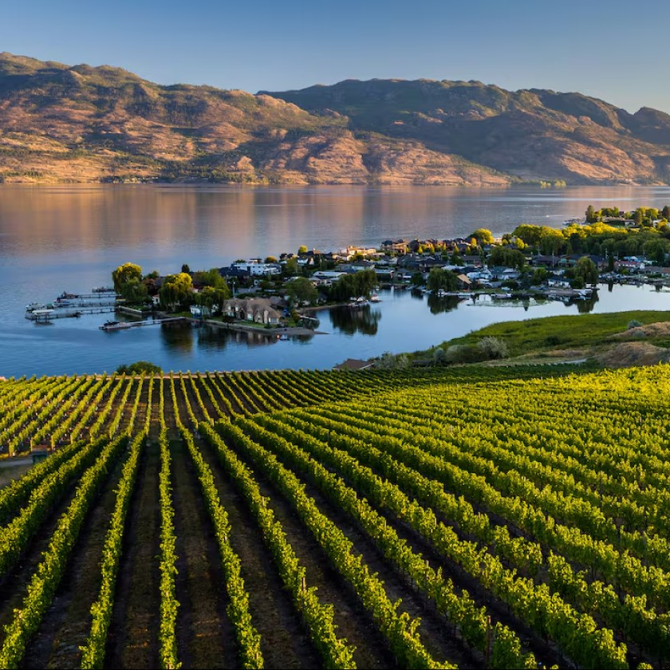
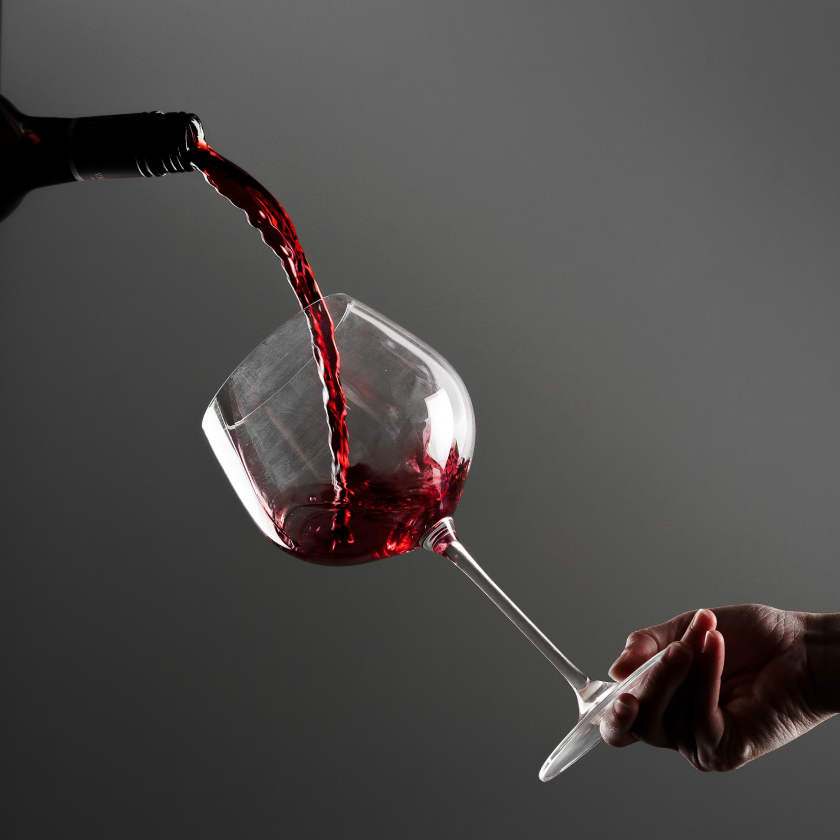

Featured sections

WINERY REVIEWS
Monthly reviews of the top wineries and restaurants in Canada, with a focus on the Okanagan region.

WINE RANKINGS
New reviews every week—while every wine is worth trying, I’ll help you decide which wines are worth the purchase.
ABOUT ME
Take a look at my professional profile—experience in wine and sales—and how to get in touch.
Profile
ABOUT ME
I’m Marcus Fisico, based in the Okanagan. I write about wine and hospitality with an emphasis on producers and bottles you can actually find—and enjoy—locally. My background spans wine sales and customer-facing roles; this site is where I share honest rankings and winery stories.
Phone: (905) 550-4963
Email: marcusfisico02@gmail.com